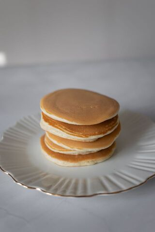

Pancakes

Description
Everyone loves pancakes!
This quick recipe contains only 3 ingredients to make deliciuous pancakes.
Ingredients (for 3 servings):
- Large eggs: 3
- Cottage cheese: 170 g
- Self-rising flour: 95 g
- Cooking spray
Steps
- Combine eggs, cottage cheese, and flour in a blender. Blend until smooth.
- Heat a nonstick skillet or griddle over medium heat. Coat with nonstick spray. Drop 3-tablespoon portions of batter onto the skillet. Cook until edges are set, 1 to 2 minutes. Carefully turn and cook until bottoms are browned, 1 to 2 minutes.
- Serve with desired toppings, e.g. maple syrup, jam, fresh berries, or powdered sugar.
Home